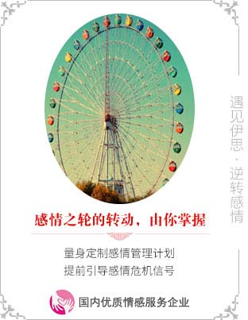
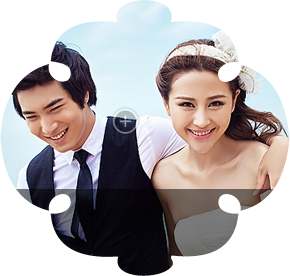

更多免费的课程>>
-
对爱情充满无限向往，然而，却一直还是单身?
眼看着别人的生活中处处充满甜蜜，你还在执着于"不急"吗?
恋爱，难道只能依靠缘分?
当然不是，伊思脱单训练，教你快速构架异性社交圈，储备恋爱资源，提升自我价值。
让你在异性眼中脱颖而出，恋爱，还会远吗?
-
恋爱出现问题，想要挽回，却对挽回一无所知?
徒有一腔热血，却始终把握不到挽回的关键?
当婚姻亮起了红灯，不要惊慌和怀疑，应该用聪明的方式捍卫自己的婚姻。
你需要的是一个引导者，伊思，从来不敢在爱情上称作老师，只是会以丰富的经验来引导你，告诉你恋爱挽回的关键所在
分手，不过是爱情的一个插曲。如果你就此放弃，意味着这段爱情也会走到终点
-
是时候让我们为你的婚姻做诊断了
没有拯救不了的婚姻，除非你先放弃
当婚姻亮起了红灯，不要惊慌和怀疑，应该用聪明的方式捍卫自己的婚姻。一哭
二闹三上吊的招数早就不管用了，伊思情感教你新技能get√。请你逝去眼角和
底的泪水，与伊思并肩作战，我们将为你打赢这场婚姻的保卫战。
-
相处是一门学问，把握彼此之间的关系很重要。
在生活相处中，总是很难把握自己与别人的关系维度?
对恋人难以建立亲密关系，对朋友难以拓展社交关系?
这些，伊思都可以帮你，从你自身的实际情况出发，教授你最适合的关系管理方法。
-
内向，沉默，无法沟通?你还在被这些束缚在自己的世界里?
羡慕别人能够谈笑风生，然而自己却没有完成完美交谈的能力?
不懂表达怎么行?伊思沟通话术，从实战演练入手，手把手教你克服沟通障碍，掌握沟通技，
从此，让沟通成为一种享受。
万晓霞
《幸福在哪里》栏目常驻嘉宾
曾任四川省妇联法律顾问处副主任


全方位爱情体系
专注情感实战指导



2015年11月26日 山东
成功挽救婚姻
-
-
钟晓燕
国家三级心理咨询师
国家级心理沙盘咨询师
 钟晓燕老师是国家三级心理咨询师，婚姻家庭咨询师，并且还曾经担任成都团委12355心理热线援助志愿者。其擅长恋爱和婚姻当中的危机处理,能够深入理解委托人面临的各种问题，熟练运用危机解决模型和情感匹配模型协助委托人达成委托目标。实际工作中，她具备足够的耐心协助委托人摆脱困境,陪伴委托人度过人生最艰难的时刻,她擅长以最温柔的方式帮助委托人达成目标。她录制的婚姻经营系列课程，不但获得了上百万的点击量，深受委托人的推崇，还被多家媒体相继采访、报道。
钟晓燕老师是国家三级心理咨询师，婚姻家庭咨询师，并且还曾经担任成都团委12355心理热线援助志愿者。其擅长恋爱和婚姻当中的危机处理,能够深入理解委托人面临的各种问题，熟练运用危机解决模型和情感匹配模型协助委托人达成委托目标。实际工作中，她具备足够的耐心协助委托人摆脱困境,陪伴委托人度过人生最艰难的时刻,她擅长以最温柔的方式帮助委托人达成目标。她录制的婚姻经营系列课程，不但获得了上百万的点击量，深受委托人的推崇，还被多家媒体相继采访、报道。 -
猫腻
实战派布局专家
恋爱长期关系导师
 婚姻家庭咨询师，约会专家，实战派约会教练。金融投资人出身，作为伊思情感首席约会教练，不光积累了丰富的实战经验，他在打扮、时尚和风格方案也是一个专家，他给学生带来的，不光光是情感上的收获，更多的时候，是改变一个人的社交能力从而带来生活品位的提升。他很明白针对不同的目标，设置不一样的执行方案，同时，对于两性相处的长期关系构建，他也有非常丰富的实战经验，猫腻可以帮助你塑造全新优质的情感生活。
婚姻家庭咨询师，约会专家，实战派约会教练。金融投资人出身，作为伊思情感首席约会教练，不光积累了丰富的实战经验，他在打扮、时尚和风格方案也是一个专家，他给学生带来的，不光光是情感上的收获，更多的时候，是改变一个人的社交能力从而带来生活品位的提升。他很明白针对不同的目标，设置不一样的执行方案，同时，对于两性相处的长期关系构建，他也有非常丰富的实战经验，猫腻可以帮助你塑造全新优质的情感生活。 -
陈晨
国家注册婚姻家庭咨询师
两性情感深度维系导师
 陈晨老师是美国ESM认证导师，高级情感教练，典型的狮子座头脑，既能够理性分析委托人所遇到的问题，又能够极具行动力的找出矛盾点，提供全面、细致的解决方案。擅长婚姻家庭关系处理，深度挖掘可用信息，从婚姻双方角度双线分析，为委托人重新构建最优质的相处模式。在加入伊思之后，她醉心公益，多次担任四川省婚姻家庭联合协会的志愿者，为边远地区的人们提供义务的情感咨询服务，让更多的家庭获得幸福与美满。
陈晨老师是美国ESM认证导师，高级情感教练，典型的狮子座头脑，既能够理性分析委托人所遇到的问题，又能够极具行动力的找出矛盾点，提供全面、细致的解决方案。擅长婚姻家庭关系处理，深度挖掘可用信息，从婚姻双方角度双线分析，为委托人重新构建最优质的相处模式。在加入伊思之后，她醉心公益，多次担任四川省婚姻家庭联合协会的志愿者，为边远地区的人们提供义务的情感咨询服务，让更多的家庭获得幸福与美满。 -
张艳霞
婚恋问题高级情感教练
国家二级心理咨询师
 张艳霞老师2012年便涉足两性情感领域。对于两性心理，两性思维模式以及差异，两性行为认知都有深刻的研究，精准的分析，独到的见解。在两性性心理，婚姻关系修复方面有着多年的丰富的实操指导经验。因其本身的婚姻关系，对异地恋以及异地婚姻的维系有实用的方法以及体验。加入伊思情感以来，认真的工作态度和优质的服务质量受到广大委托人的信赖。
张艳霞老师2012年便涉足两性情感领域。对于两性心理，两性思维模式以及差异，两性行为认知都有深刻的研究，精准的分析，独到的见解。在两性性心理，婚姻关系修复方面有着多年的丰富的实操指导经验。因其本身的婚姻关系，对异地恋以及异地婚姻的维系有实用的方法以及体验。加入伊思情感以来，认真的工作态度和优质的服务质量受到广大委托人的信赖。
-
钟晓燕
-
-
-
樊林
婚恋及心理学高级讲师
资深进化心理学研究导师
樊林老师毕业于马来西亚亚洲城市大学，是婚恋及心理学高级讲师，国家婚姻家庭咨询师。温和细腻的性格让她能够迅速的捕获委托人在两性情感中的优点、缺点以及思维模式，并且制作有针对性的方案，在最短的时间内，击破问题，完成情感修复。加入伊思以来，一直从事两性情感模型研究与实践工作，擅长归纳总结，其分享的课程《浅谈性格色彩与应用》《幸福婚恋与亲子心路分享会》累计播放量超过50万，帮助更多的人走出困境，找到自我。 -
黄卫华
国家二级心理咨询师
国际认证EFT情绪管理师
黄卫华老师是国家二级心理咨询师，国际认证ETF情绪管理师，深圳幸福家庭研究院幸福家庭种子导师。她进入两性情感心理行业有16年的时间，曾经在在社区创办"阳光家庭"公益课堂，指导父母之间的相处与亲子教育方面的问题，参加第五届中国幸福家庭种子师培养计划，深入对婚姻家庭的分析，这16年心理学学习实践，200场心理学家庭教育讲座的基础，让她对国人的婚姻观、恋爱观、教育观有着深入透彻的分析和理解。加入伊思情感以来，专研婚姻关系，从两性思维模式出发，帮助委托人找到适合的相处模式和婚姻经营方法，从根源解决两性相处难题。 -
马老师
国际注册心理咨询师
资深色彩行为研究导师
马淑媛老师是国家三级心理咨询师，婚姻家庭咨询师，在加入伊思之前，一直在北京的NGO工作，帮助婚姻中处于弱势群体的女性找回自我，摆脱家暴和虐待。回到成都之后，加入伊思情感，主要专攻婚姻家庭部分的情感问题研究与解决模型的建立，她习惯于深度挖掘案例信息，快速找出危机与问题出现的根源，从双方婚姻面临的实际问题出发，制作可行性方案，手把手指导问题解决。服务过程中，她总是专业、耐心，为委托人提供全面、多维度的两性情感服务。 -
张显金老师
国家二级婚姻家庭咨询师
公益组织"心淘智心馆"创始人
 张显金老师是中国高级心理教练，幸福密码咨询师，经常参加公益活动讲座，创办公益性组织-心淘智心馆，坚持主讲公益心理沙龙100多场，让至少10000个家庭得到了受益，培养了一大批心理教练，同期还走进各种孤儿院、敬老院，给他们带来陪伴和心理关怀，走进各种企事业单位，进行各种公益讲解。加入伊思以来，专研两性情感关系交流，以及婚姻关系修复，通过把自己所学，帮助委托人找到适合的相处模式和婚姻经营方式，他立志于把爱传出去，让更多的人能智慧的得到幸福。
张显金老师是中国高级心理教练，幸福密码咨询师，经常参加公益活动讲座，创办公益性组织-心淘智心馆，坚持主讲公益心理沙龙100多场，让至少10000个家庭得到了受益，培养了一大批心理教练，同期还走进各种孤儿院、敬老院，给他们带来陪伴和心理关怀，走进各种企事业单位，进行各种公益讲解。加入伊思以来，专研两性情感关系交流，以及婚姻关系修复，通过把自己所学，帮助委托人找到适合的相处模式和婚姻经营方式，他立志于把爱传出去，让更多的人能智慧的得到幸福。
-
樊林
-
-
-
Joney
伊思创始人&首席私人情感教练
大中华区ESM两性关系研究协会会长
伊思情感创始人，首席私人情感教练导师，国家二级心理咨询师，婚姻家庭咨询师，大中华区ESM两性关系研究协会会长。15年行业服务经验，从业以来，处理万余例委托，情感服务行业开拓者和缔造者。被伊思学员们描述为"百科全书",精通涉及恋爱、约会、婚姻等各方面的情感模型、方法、系统、原则及诱惑技术。从业以来,被多家主流媒体报道,包括《人物》杂志、《汽车生活》杂志等，其参与创作的电影《疯岳撬佳人》2017年正式上映。 -
刘勇萍
成都市心理咨询师协会会员
资深女性生活顾问
美国ESM认证导师，国家二级心理咨询师，婚姻管理专家，四川大学心理专业研究生。加入伊思情感以来，主要从事对婚姻危机案例的统筹、研究和分析，在大量数据的基础上，与专业的心理知识相结合，提供有效的可行性方案。累计为全国96家企业进行278场婚姻管理\恋爱培训课程，帮助员工更好的协调家庭与工作，爱情事业双丰收。 -
赵敏
美国OMNI催眠师
四川省心理咨询专委会会员
 赵敏老师是上市企业hr管理出身，有多年与各大企业高管沟通管理经验，这些经验让她具备了敏锐的人际关系察觉能力。加入伊思以来，她将对人际关系深入透彻的了解运用于两性情感领域，为许多焦灼的情感问题提供了新思路与新方法。目前，她专注于两性情感关系交流，迅速帮助委托人察觉双方互动中的问题，挖掘出矛盾的本质，并提出解决方案。她多次参与伊思情感与成都各大社区举办的两性情感活动，并且在活动中运用实战派的指导方法，将问题化繁为简，迅速解决。
赵敏老师是上市企业hr管理出身，有多年与各大企业高管沟通管理经验，这些经验让她具备了敏锐的人际关系察觉能力。加入伊思以来，她将对人际关系深入透彻的了解运用于两性情感领域，为许多焦灼的情感问题提供了新思路与新方法。目前，她专注于两性情感关系交流，迅速帮助委托人察觉双方互动中的问题，挖掘出矛盾的本质，并提出解决方案。她多次参与伊思情感与成都各大社区举办的两性情感活动，并且在活动中运用实战派的指导方法，将问题化繁为简，迅速解决。 -
万老师
曾任四川省妇联法律顾问处副主任
《幸福在哪里》栏目常驻嘉宾
 万晓霞老师是伊思情感婚姻危机高级顾问，美国ESM认证导师，四川省妇联法律顾问处副主任。从事婚恋研究，婚恋指导，婚姻调解，亲子教育近四十年，是著名的婚恋专家和亲子教育专家，积累了丰富的婚姻危机处理经验。现就任于成都伊思情感，专注于两性婚姻危机的分析、解决，以及婚姻危机管理系统的开发、研究。对婚姻危机的深入了解，使得其能够在接受委托之后，迅速甄别危机所属类型，构建危机解决方案，快速解除委托人婚姻危机！曾担任四川省最高人民法院特邀调解员、四川省家庭教育研究会、四川省家长学校总校专家，被四川省司法厅、四川省妇联授予"金牌调解"。曾多次参与四川电视台的各大情感节目，包括《幸福在哪里》等，其专业、有趣的指导风格，获得行业内外的一直好评和认可。
万晓霞老师是伊思情感婚姻危机高级顾问，美国ESM认证导师，四川省妇联法律顾问处副主任。从事婚恋研究，婚恋指导，婚姻调解，亲子教育近四十年，是著名的婚恋专家和亲子教育专家，积累了丰富的婚姻危机处理经验。现就任于成都伊思情感，专注于两性婚姻危机的分析、解决，以及婚姻危机管理系统的开发、研究。对婚姻危机的深入了解，使得其能够在接受委托之后，迅速甄别危机所属类型，构建危机解决方案，快速解除委托人婚姻危机！曾担任四川省最高人民法院特邀调解员、四川省家庭教育研究会、四川省家长学校总校专家，被四川省司法厅、四川省妇联授予"金牌调解"。曾多次参与四川电视台的各大情感节目，包括《幸福在哪里》等，其专业、有趣的指导风格，获得行业内外的一直好评和认可。 -
黄佩佑
国内茶寮治疗法开创者
国家二级婚姻家庭咨询师
 黄佩佑老师，中科院心理研究所在职研究生，茶寮治疗师，有着多年与国内知名企业培训经历，并举办企业内训上百场。加入伊思以来，她将茶寮治疗法和婚姻情感相结合，首次开创了用茶寮方式疗愈婚姻情感问题，开辟了情感咨询中的新模型和新思路。其中对于两性行为的茶寮式解读，更是受到业界和众多公司的广泛推崇。目前，她专注并将其应用于两性关系，婚姻家庭，亲子教育领域等领域，帮助了众多伊思学员走出困惑，解决问题，学员评价其为：“茶寮式的温情指导”。用传统文化的素养结合现代手段, 打开学员心灵枷锁,找到事物本质,对症下药,还原幸福!
黄佩佑老师，中科院心理研究所在职研究生，茶寮治疗师，有着多年与国内知名企业培训经历，并举办企业内训上百场。加入伊思以来，她将茶寮治疗法和婚姻情感相结合，首次开创了用茶寮方式疗愈婚姻情感问题，开辟了情感咨询中的新模型和新思路。其中对于两性行为的茶寮式解读，更是受到业界和众多公司的广泛推崇。目前，她专注并将其应用于两性关系，婚姻家庭，亲子教育领域等领域，帮助了众多伊思学员走出困惑，解决问题，学员评价其为：“茶寮式的温情指导”。用传统文化的素养结合现代手段, 打开学员心灵枷锁,找到事物本质,对症下药,还原幸福!
-
 joney
joney -

-
- 社会活动
- 情感路线
- 媒体报道
- 人文关怀